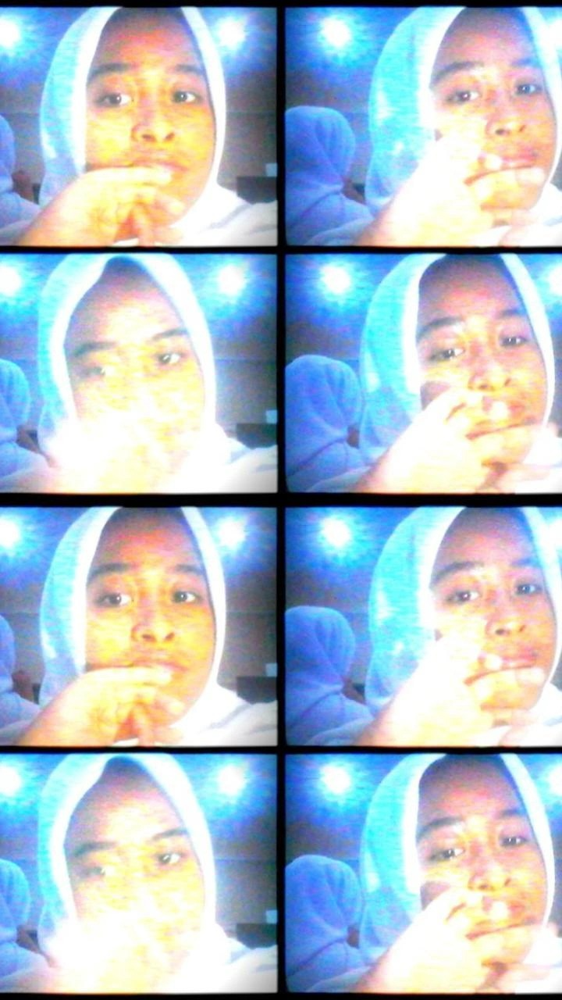
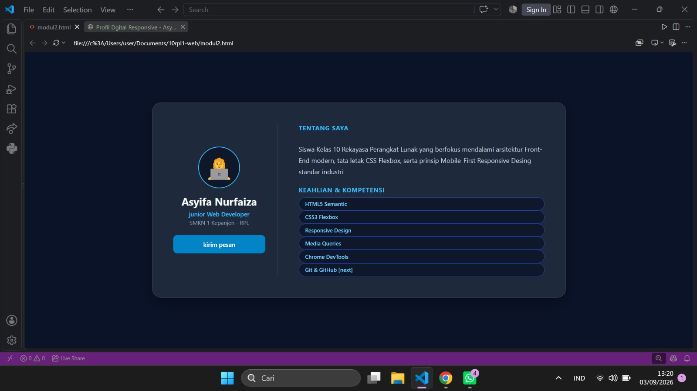
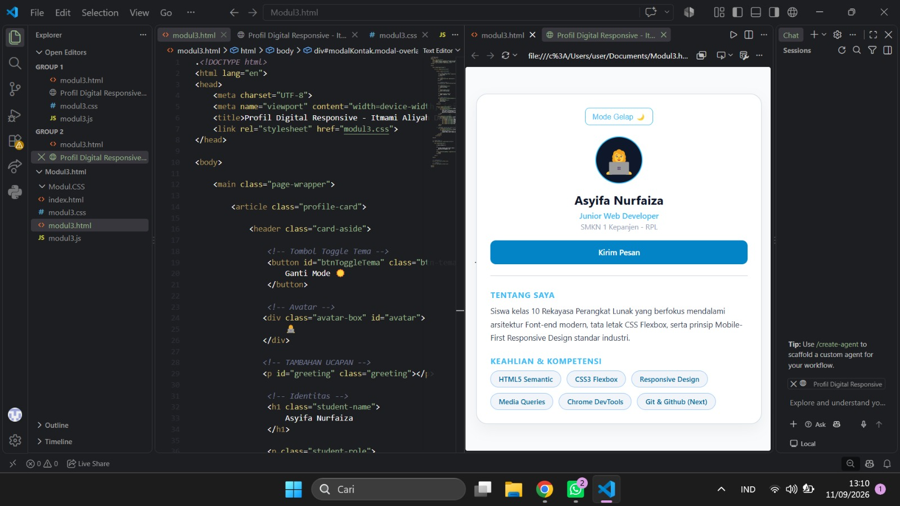
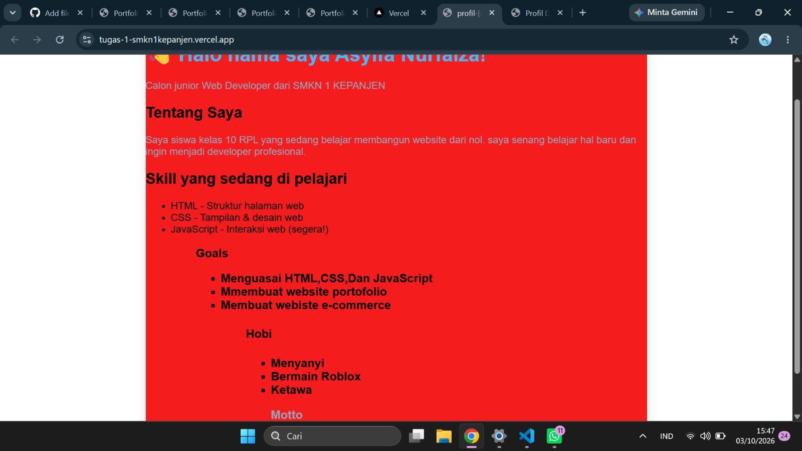
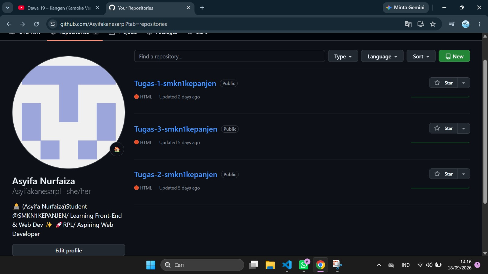

Halo! Saya Asyifa Nurfaiza, seorang siswi Rekayasa Perangkat Lunak (RPL) yang berfokus pada pengembangan antarmuka web yang rapi,responsif, dan mengutamakan kenyamanan pengguna.

| Nama Lengkap | Asyifa Nurfaiza |
| Pendidikan | SMKN 1 KEPANJEN - Rekayasa Perangkat Lunak |
| Lokasi | Malang, Jawa Timur, Indonesia |
| Fokus Utama | Pengembang Website & UI/UX Design |
| Bahasa | Bahasa Indonesia, English (Basic) |
Perangkat dan bahasa yang sering saya gunakan dalam project:

Website portofolio interaktif dengan toggle tema terang/gelap, layout adaptif untuk berbagai ukuran layar, serta modal informasi mendalam.
Lihat Repositori
Website portofolio interaktif dengan toggle tema terang/gelap, layout adaptif untuk berbagai ukuran layar, serta modal informasi mendalam.
Lihat Repositori

Punya pertanyaan, ide kolaborasi, atau sekedar ingin menyapa? Silakan kirimkan pesan melalui formulir ini atau kanal media sosial saya.